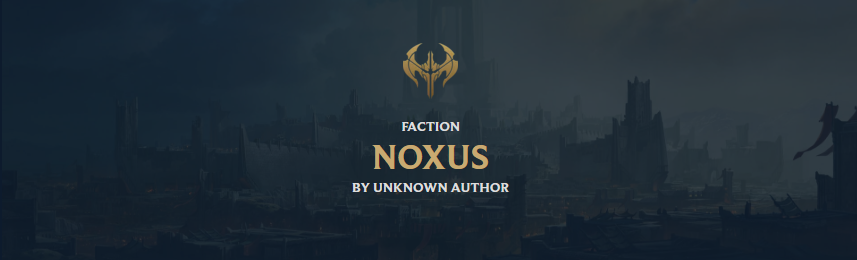
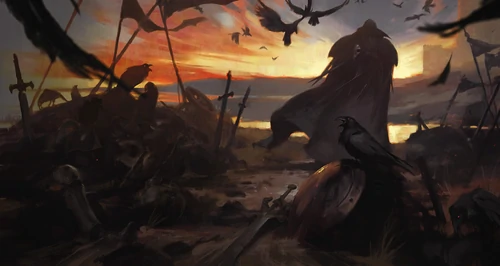

Noxus

Hi, Players. I am Darius"Noxus will rise.".
Noxus is a powerful empire with a fearsome reputation. To those beyond its borders, Noxus is brutal, expansionist, and threatening, yet those who look beyond its warlike exterior see an unusually inclusive society, where the strengths and talents of its people are respected and cultivated. Its people were once a fierce reaver culture until they stormed the ancient city that now lies at the heart of their empire. Under threat from all sides, they aggressively took the fight to their enemies, pushing their borders outward with every passing year. This struggle for survival has made the Noxians a deeply proud people who value strength above all, though that strength can manifest by many different means. Anyone can rise to a position of power and respect within Noxus if they display the necessary aptitude, regardless of social standing, background, homeland, or wealth.
- Lore
Noxus is a brutal, expansionist empire, yet those who look beyond its warlike exterior will find an unusually inclusive society. Anyone can rise to a position of power and respect if they display the necessary aptitude, regardless of social standing, background, or wealth. Noxians value strength above all, though that strength can manifest in many different ways.
Noxus Dogma
"A Noxian knows who he is, and what he must do.".- Swain
Noxians respect strength above all things, and the only way to remain strong is to be constantly tested. They relish the opportunity to compete with one another, since to not be challenged is to grow weak, and even those at the peak of power must always seek new ways to challenge themselves... or they will not remain in power for long. It is not just physical or martial strength that Noxians admire - those who demonstrate expertise in politics, craftsmanship, trade, and magic all help to create a stronger Noxus.
Anyone can prosper in Noxus, no matter their background, so long as they have the strength of will, and the drive to succeed. The warlord Darius is a perfect example of this, rising from nothing to become one of the empire's most powerful leaders. Despite this meritocratic ideal, the old noble families still wield considerable power at the heart of the empire, and some fear that he greatest threat to Noxus comes not from its enemies, but from within.
- Aurthor and Date
- A unknown writer of league of legends
- 2020.10.10
- Assimilation

As Noxus expands and defeats neighboring cultures and cities, it offers the conquered people a choice; swear loyalty to Noxus and be judged solely on your worth, or be destroyed. This is not subterfuge or any kind of ruse; the Noxians are as good as their word, and many who have embraced their conquerors' way of life find their prospects greatly improved. But those who refuse to bend the knee are crushed without mercy.
| Champions | Milestone | Event |
|---|---|---|
| Age of Tyranny | Death to the King | The Battle of Bard Mountain |